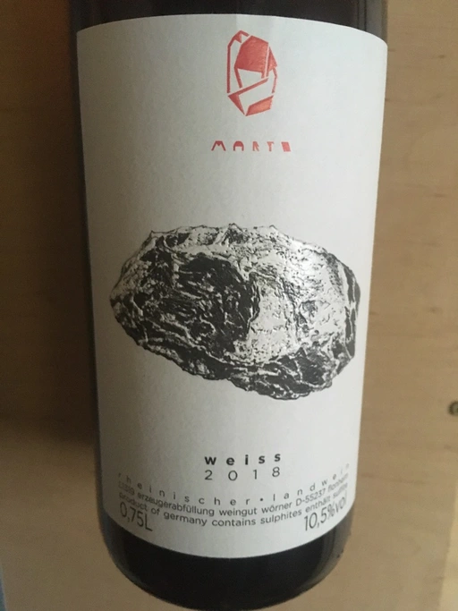

- Type
- White Still, Dry
- Producer
- Marto
- Vintage
- 2018
- Location
- Germany, Rheinischer Landwein
- Grapes
- Bacchus, Würzer, Riesling, Müller-Thurgau, Silvaner, Scheurebe
- Alcohol
- 10.5
- Sugar
- 0
- Price
- 490 UAH
- Cellar
- N/A
Ratings
2020-07-08 - 8.00
A discovery. I am not familiar with German wine and this orange wine made from grapes, most of which I haven’t heard about before - Bacchus, Würzer, Müller-Thurgau, Silvaner, Scheurebe and Riesling. Skin contact for two weeks of two-thirds of the grapes. Result is delightful. Dried flowers, apricot, zest and tea. Perfect balance, structured, long finish. Great value.
2020-09-15 - 7.50
Tasting again after 2 months. Consistently good. Dried flowers, zest and tea. A little bit plain in the taste, but still good structured wine with skin contact. QPR here is very nice (even after the increase).
2020-09-18 - 7.50
See my previous notes. Dried flowers, tea and zest.
2021-10-09 - 7.00
Fading and not interesting anymore. Either a bottle variation or it’s just the wine itself. In the nose it’s quite simple - flowers, zest and VA. On the palate it lacks balance, but is more interesting thanks to good tannin and VA finish. So overall this wine is kind of OK, but there are better oranges out in the wild.